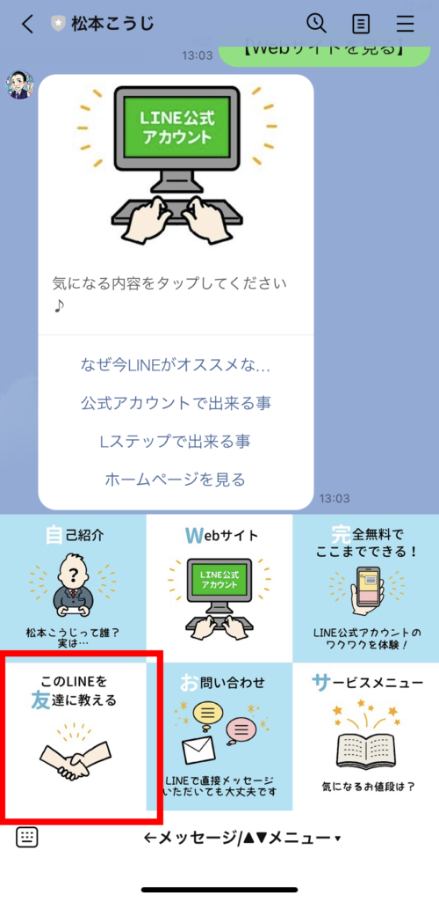
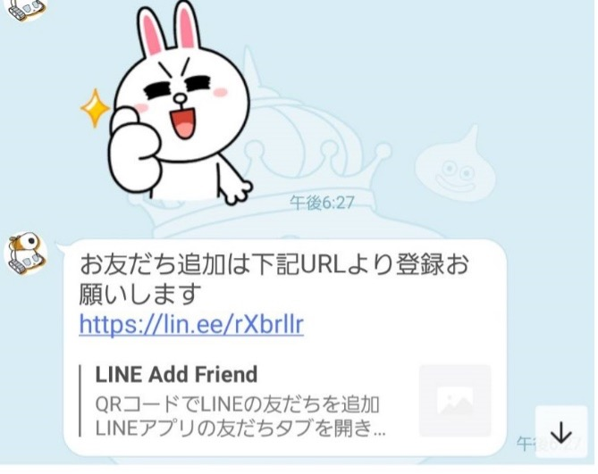
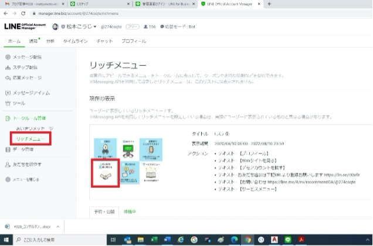
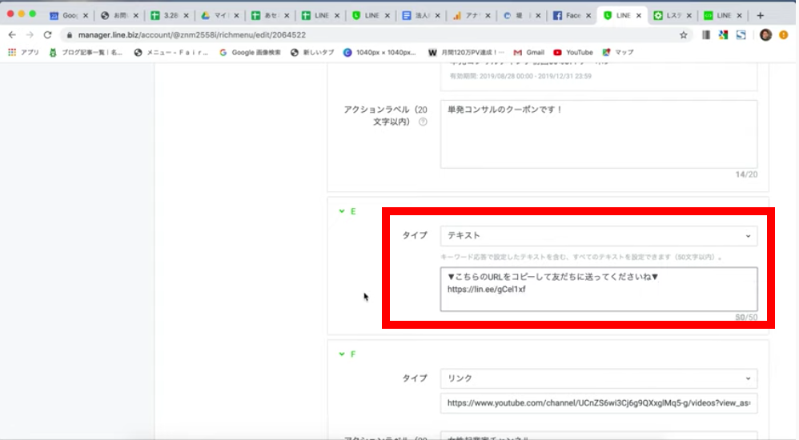
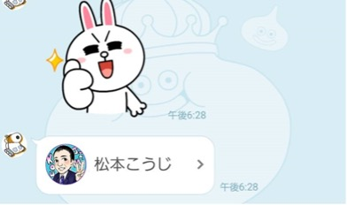
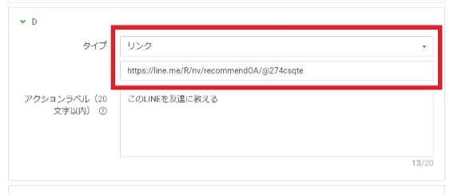
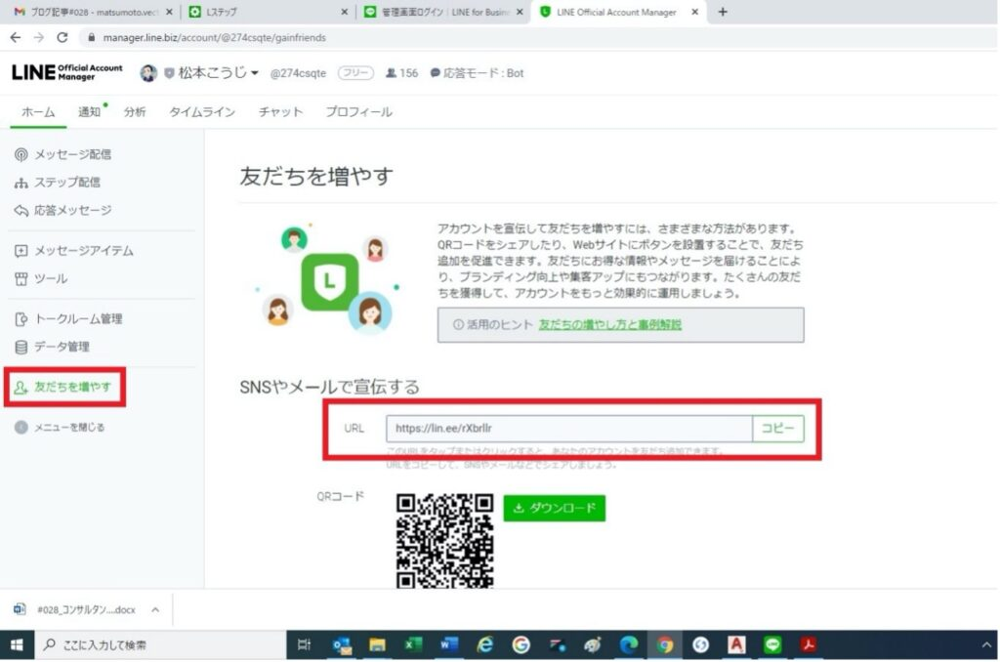
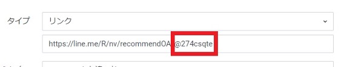

#028_コンサルタント直伝の裏技！
こんにちは！ 今日はmatsumotoのリッチメニュー に仕込んでいる「コンサルタントならではの裏技」についてご紹介します。こちらは、意外と知られていない友だち獲得率がグッと上がる裏技。ぜひ参考にしてくださいね！
（１）matsumotoのリッチメニュー

まずは、matsumotoのリッチメニュー を初公開！ matsumotoの公式アカウントに友だち登録していただくと、このように表示されます。駆け出しの頃から何度か作り直しているのですが、いろんな反響やご意見など受けて、現在このような形に落ち着きました。
（２）友だちが友だちを招待してくれる仕掛け
注目いただきたいのは、リッチメニュー 左下の「このLINEを友達に教える」というボタンです！ リッチメニューの作成方法などは、過去のブログ記事で解説していますのでそちらをご覧いただきたいのですが、このボタンをタップして出てきたURLが書いてあるメッセージを別の友だちに送ってもらうという方法です。

リンクを受け取った人がこれをタップすれば、即matsumotoの公式アカウントが表示され、友だち登録してもらえます！ ただ、さすがにこのリンクだけ送ってこられてもお相手には意味が分からないでしょうから、「この人の公式アカウントいいよ！」など、簡単な情報を付け加えてもらうとより登録してもらえる確率が上がるでしょう。
いずれにしても、こんなに簡単に「友だちの友だち」まで招待してもらえる機能、とても便利だと思いませんか？ 一体どのように設定するのか、解説していきますね！
（３）設定の仕方
ここからは、おなじみLINE Official Account Managerからの作業です。

まずリッチメニュー 設定画面で「このLINEを友だちに教える」ボタンのあるリッチメニュー 画像をアップします。（リッチメニュー 設定方法をもっと詳しく知りたい方はこちらへ）

次に、左のメニューから「友だちを増やす」を選び、自分の公式アカウントのURLをコピーします。

「リッチメニュー 」設定画面に戻り、「友だちに教える」ボタンに設定を入力していきます（この場合、リッチメニュー 画像・下段の一番左なのでD）。
タイプは「テキスト」を選択し、先ほど確認した自分の公式アカウントURLと簡単な説明を50字以内で入力します。設定はこれだけ！とても簡単なので、ぜひ活用してみてくださいね！！
（４）コンサルタントだけが知ってる裏技
ここでコンサルタントの裏技として、実はこんな表示にさせることができます。

見た目だけの問題ですが、どうですか？ アイコンが出てるとURLよりはなんとなく押してもいいかなって気になりませんか？！
それでは設定方法を説明します。

先程の設定と同じリッチメニューの設定画面で、タイプを「リンク」にして下記URLを入力します。
https://line.me.R/nv/recommendOA/アカウントID
となります。アカウントIDとは、管理画面の上部で確認できます。私の場合は @274csqte になります。


簡単ですよね？ たったこれだけならやってみる価値はあると思います。
（５）最後に
ただ、先にも言いましたが「設定さえしておけば勝手に友だちが増える」というものではありません。日頃から「このボタンからぜひ友だちを紹介してほしい」とお願いしたり、SNSや各種配信などでこのボタンの使い方をちゃんと伝えていきましょう。いくら便利な機能でも、結局使うのは人ですから、使ってもらえるようきちんと言葉で伝えていくことが大切です！